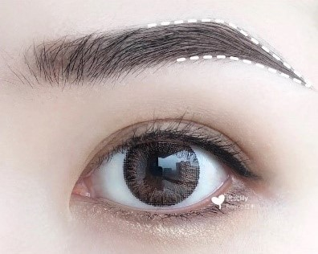
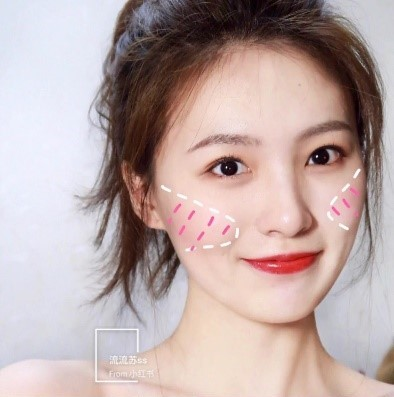

額頭:額頭大而方
顴骨:顴骨較寬
下巴:下領骨處較方且大
BEAUTY&BEST
廣告放置區
額頭:額頭大而方
顴骨:顴骨較寬
下巴:下領骨處較方且大
修容辦法
1、在稜角明顯處，例如下領骨圓順地打上修容，適當強調山根。
2、蘋果肌提亮，下巴畫上高光，把視覺集中在面中而不是外輪廓。
適合眉毛
標準眉
整體眉型眉峰眉尾下落柔和。
適合腮紅
扇形腮紅
1、縮短臉部寬度
2、選擇與妝容色調一致的顏色
3、建議顏色：奶茶色系、珊瑚色系、玫瑰色系
整體:面部沒什麼稜角
顴骨:顴骨處較寬
下巴:下巴較短
修容辦法
1、額頭兩側可以適當修容，讓額頭更窄更立體。
2、顴骨處及下方可以稍做修飾，可以減少肉感。
3、鼻樑以及眉弓需要強調。
4、臉部兩側修容，下巴中間提亮，塑造V臉。
適合眉毛
歐式眉
由於圓臉缺乏立體感，歐式眉的眉峰高、眉尾低，可以很好的修飾扁平的臉型，讓五官立體深邃。
適合腮紅
眼下/純欲腮紅：
1、不挑臉型
2、適合低飽和度的顏色
3、建議顏色：粉色系、玫紅色系
整體:面部沒什麼稜角
顴骨:顴骨處較寬
下巴:下巴較短
修容辦法
1、額頭兩側可以適當修容，讓額頭更窄更立體。
2、鼻樑以及眉弓需要強調。
適合眉毛
歐式眉
由於缺乏立體感，歐式眉的眉峰高、眉尾低，可以很好的修飾扁平的臉型，讓五官立體深邃。
適合腮紅
斜拉腮紅：
1、建議顏色：珊瑚色系
額頭:額頭較窄
顴骨:顴骨處較寬
臉頰:臉頰較窄
修容辦法
1、臉形頭窄而高，用一點陰影讓他看起來短且圓潤一點。
2、把額頭兩邊用高光畫飽滿，顴骨用陰影向內收縮。
3、鼻樑和蘋果肌適度強調，讓面中不會過於平寬。
適合眉毛
小挑眉
菱形臉顴骨高、額頭窄、稜角多，整體柔和的小挑眉可以視覺拉長額頭寬度，柔和臉形。眉峰略高，整體呈上揚的感覺。
適合腮紅
微醺腮紅:
1、適合日系妝容
2、建議顏色：橘紅色系
額頭:額頭較寬大
整體:面部兩側弧度很V
下巴:下巴較尖
修容辦法
1、問題在於額頭過寬，所以額頭兩側要重點修容，中間弱化顴骨。
2、把過尖的下巴稍微修飾圓潤短一點，臉頰兩側加高光，讓面中澎起而不是過於消瘦。
適合眉毛
柳葉眉
眉毛沒有明顯的稜角，眉毛較長、眉尾較細。視覺上裝飾額頭和顴骨過寬。
適合腮紅
眼下/純欲腮紅：
1、不挑臉型
2、適合低飽和度的顏色
3、建議顏色：粉色系、玫紅色系
額頭:額頭較寬大
整體:面部兩側弧度很V
下巴:下巴較尖
修容辦法
1、問題在於額頭過寬，所以額頭兩側要重點修容，中間弱化顴骨。
2、把過尖的下巴稍微修飾圓潤短一點，臉頰兩側加高光，讓面中澎起而不是過於消瘦。
適合眉毛
柳葉眉
眉毛沒有明顯的稜角，眉毛較長、眉尾較細。視覺上裝飾額頭和顴骨過寬。
適合腮紅
眼下/純欲腮紅：
1、不挑臉型
2、適合低飽和度的顏色
3、建議顏色：粉色系、玫紅色系
額頭:額頭較窄、太陽穴凹陷
顴骨:顴骨較寬
下巴:兩腮較大或方
修容辦法
1、小額頭加上凹陷的太陽穴，需要在額頭和太陽穴適度提亮。
2、鼻子也要立體起來，顴骨和兩腮要打上修容。
3、把夏巴稍微修式圓潤一點，臉頰兩側加高光，讓面中膨起而不是過於消瘦。
適合眉毛
歐式眉
由於缺乏立體感，歐式眉的眉峰高、眉尾低，可以很好的修飾扁平的臉型，讓五官立體深邃。
適合腮紅
眼尾腮紅：
1、適合太陽穴較窄的
2、建議顏色：玫瑰色系、粉色
風格
怎麼畫
1、適合太陽穴較窄的
2、建議顏色：玫瑰色系、粉色
XX妝容
妝容效果簡述
XX妝容
妝容效果簡述
XX妝容
妝容效果簡述
Get in Touch
雲林縣斗六市大學路123號
0985567610


@2022 Beauty&Best 版權所有